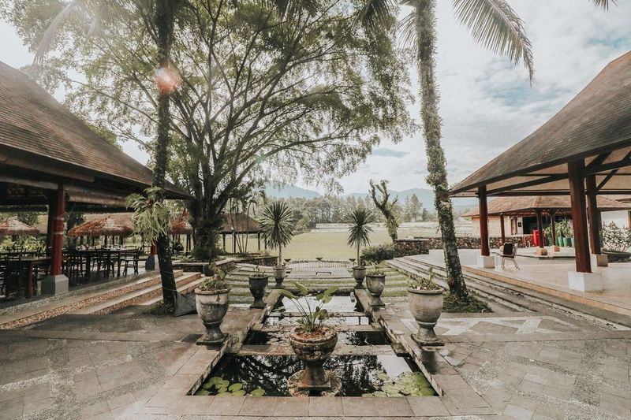

Taman Budaya Sentul, Tempat Rekreasi Terbaik Bagi Keluarga
Tinggal di kota besar yang penuh dengan kesibukan bikin kita susah punya waktu luang. Tekanan pekerjaan yang terus menerus datang sering bikin stres. Pengen liburan buat ngilangin stres, tapi nggak punya banyak waktu. Padahal udah lama banget nggak liburan bareng keluarga. Gimana ya caranya tetap bisa liburan meskipun cuma punya waktu yang sempit? Daycation aja ke Taman Budaya Sentul!
Mungkin sebagian besar dari kamu masih asing dengan istilah daycation. Jadi, daycation artinya liburan seharian penuh. Jenis traveling seperti ini biasanya banyak dipilih orang-orang yang punya aktivitas tinggi sehingga cuma punya waktu sebentar buat liburan. Buat kamu yang cuma punya waktu luang di akhir pekan, daycation ke tempat wisata terdekat boleh jadi pilihan. Lokasi yang recommended buat dikunjungi salah satunya Taman Budaya Sentul.
Taman Budaya Sentul terletak di kawasan Sentul City, Jalan Siliwangi No.1, Babakan Madang, Bogor. Lokasinya sangat mudah dijangkau. Kamu juga nggak perlu berkendara terlalu jauh. Untuk sampai ke sini kamu bisa melalui akses tol Jagorawi lalu keluar di pintu tol Sentul Selatan. Lokasi Taman Budaya Sentul nggak terlalu jauh dari pintu tol. Kalau kamu takut kesasar, gunain aja google maps.
Taman seluas 6 hektar ini menawarkan pemandangan alam yang menakjubkan. Dari sini kamu bisa melihat empat gunung, yaitu Gunung Pancar, Gunung Salak, Gunung Gede, dan Gunung Geulis. Lumayan banget kan buat menyegarkan mata dan pikiran. Nggak cuma itu aja, Taman Budaya Sentul punya banyak wahana seru untuk semua umur.
Buka setiap hari dari jam 08.30 sampai 17.00, Taman Budaya Sentul menawarkan wahana seru untuk dicoba. Tempat ini sangat cocok dijadikan destinasi liburan keluarga karena punya banyak wahana yang ramah anak. Harga tiket untuk setiap wahananya juga cukup bervariasi, jadi nggak akan bikin kantong kamu jebol. Penasaran apa aja wahana yang ada di Taman Budaya Sentul? Ini dia daftarnya.
1. PanahanPengen bisa memanah seperti aktor di film-film hollywood? Cobain aja wahana memanah di Taman Budaya Sentul. Di sini kamu bisa mencoba belajar memanah dengan teknik yang benar. Soal keamanannya kamu nggak perlu khawatir karena kamu akan didampingi pemandu profesional. Wahana panahan di Taman Budaya sentul tersedia untuk orang dewasa maupun anak-anak. Untuk mencoba wahana ini kamu cukup mengeluarkan uang sebesar Rp50 ribu/pax aja! Cukup terjangkau bukan?
2. Flying FoxBagi yang suka memacu adrenalin, wahana yang satu ini sih nggak boleh terlewatkan. Flying fox! Flying Fox merupakan wahana wajib yang harus ada di setiap arena outbond. Dengan ketinggian 12 meter, kamu akan diajak meluncur sejauh 50 meter dari ketinggian. Termasuk wahana ekstrem, gimana soal keamanannya? Kalau soal itu kamu nggak perlu risau. Semua peralatan keamanan di Taman Budaya Sentul sudah terstandar jadi pasti aman, deh. Wahana ini harus banget kamu masukan ke dalam list liburan kamu dan keluarga biar liburan kamu semakin berkesan. Harga tiket flying fox sebesar Rp32 ribu/pax.
3. High Ropes AdultSatu lagi nih wahana yang selalu ada di arena outbond, high ropes adult! Wahana yang satu ini sangat cocok bagi kamu yang menyukai tantangan dan petualangan. Kamu akan diajak berjalan diatas seutas tali yang berada di ketinggian. Bisa kebayang kan gimana serunya? Namun karena cukup berbahaya, untuk mencoba wahana ini kamu harus menggunakan perlengkapan keamanan yang lengkap ya, RedTraveler! Untuk mencoba high ropes adult kamu harus merogoh kocek Rp200 ribu/pax.
4. Cook and Serve
Udah capek seharian nyobain wahana yang memacu adrenalin, pengen coba permainan yang lebih santai? Kamu bisa cobain cook and serve! Cook and Serve mengajak kamu untuk membuat sebuah masakan yang akan disajikan kepada orang-orang tersayang. Program ini bisa diikuti oleh semua umur dari anak-anak, remaja, bahkan sampai orang dewasa. Pengen bikin makanan buat orang tersayang tapi kamu nggak bisa masak, gimana dong? Tenang aja, ada koki profesional yang akan ngajarin kamu, kok. Kamu harus mengeluarkan biaya sebesar Rp300 ribu/pax untuk mengikuti program ini. Biaya tersebut sudah termasuk bahan makanannya ya.
5. Kegiatan Seni AnakNamanya juga liburan keluarga, pasti kamu nyari tempat wisata yang punya wahana edukatif buat anak-anak, kan? Di Taman Budaya Sentul ada kegiatan seni anak yang bisa memacu kreativitas anak-anak. Mereka akan diajarkan melukis, membatik, membuat seni clay, dan masih banyak yang lainnya. Kegiatan yang satu ini juga sangat cocok buat kamu yang membawa keluarga besar dengan segerombol anak-anak kecil. Kegiatan seni anak mematok biaya sekitar Rp35 ribu/pax.